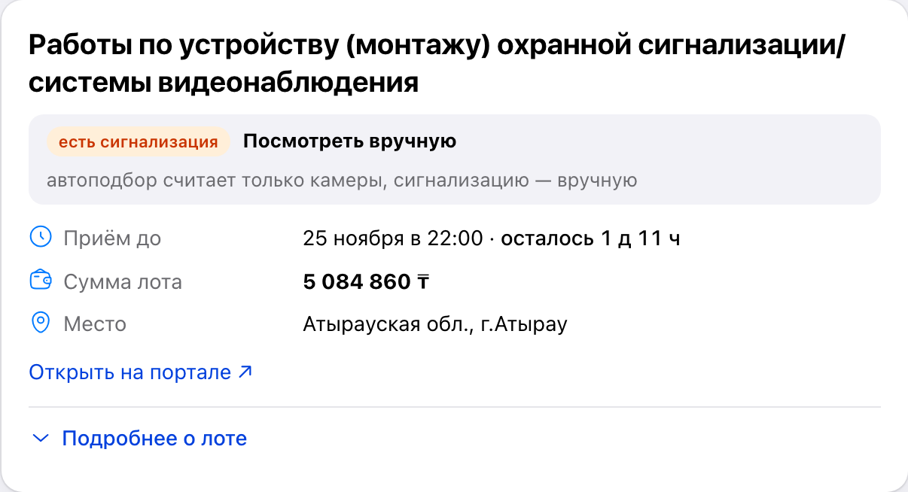
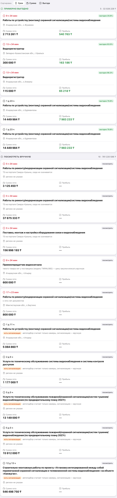
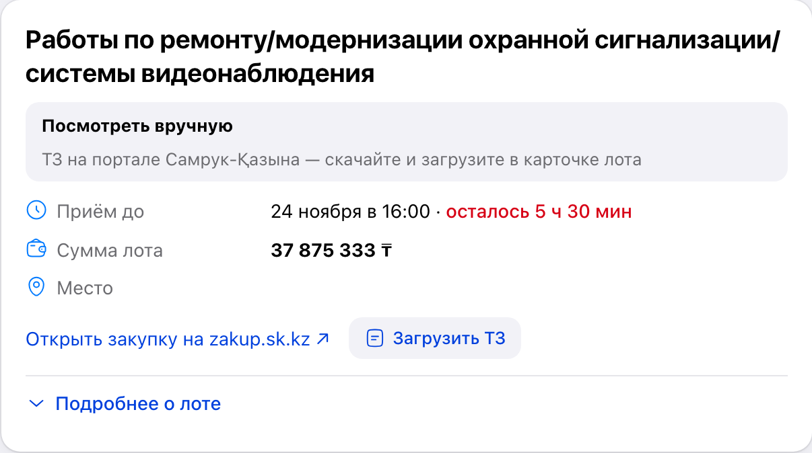
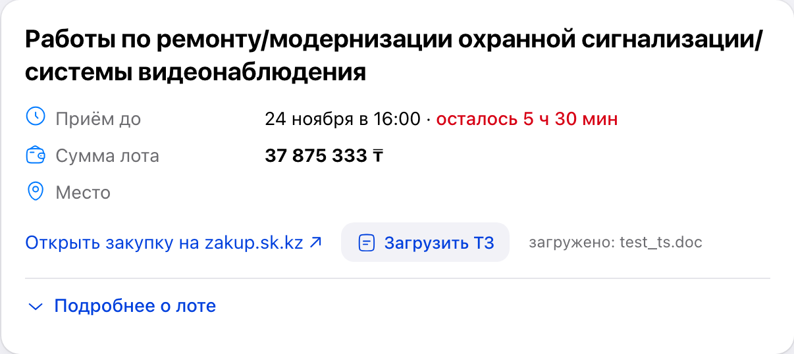

Группы лотов: выгодно / не выгодно / посмотреть вручную
24.11.2026 · помощник по госзакупкам · localhost:8765 · правила — docs/ECONOMICS.md, раздел 1 и 2.8
Коротко
- Список разбит на 4 группы: «Примерно выгодно», «На грани», «Примерно не выгодно», «Посмотреть вручную». У группы видно число лотов и общую сумму.
- Новый порог: прибыль меньше 50 000 ₸ — «невыгодно», даже если процент хороший. Порог есть в «Параметрах».
- У каждого лота из «Посмотреть вручную» написано, почему его не посчитать: ТЗ на портале Самрук-Қазына, нет документов, скан, обслуживание, есть сигнализация, товара нет у поставщика.
- Пометки на плитке и в карточке: «есть сигнализация» и «нужна лицензия».
- Не наш товар (веб-камеры, ручные видеокамеры, автомобильные регистраторы) скрыт. Найти его можно в фильтре «мусор и не наш товар».
- Лоты Самрук-Қазыны: ссылка на закупку на zakup.sk.kz и кнопка «Загрузить ТЗ».
- Добавлено ключевое слово поиска «видеосигнала» (приёмопередатчики для камер).
Что сейчас в списке (запад, открытые лоты)
| Группа | Лотов | Сумма |
|---|
| Примерно выгодно | 5 | 32 028 229 ₸ |
| На грани / Примерно не выгодно | 0 | — |
| Посмотреть вручную | 10 | 781 220 586 ₸ |
| Не наш товар (скрыт) | 2 | 3 906 035 ₸ |
Из 10 «вручную»: 7 — лоты Самрук-Қазыны без ТЗ (теперь ТЗ можно загрузить) (из них 3 — обслуживание), 1 — лот без документов, 1 — скан ТЗ на казахском (там сигнализация), 1 — приёмопередатчик, которого нет у поставщика.
Как это выглядит

Карточка лота: пометка «есть сигнализация» и причина, почему лот в группе «Посмотреть вручную».

Список по группам. Под названием каждого лота из «Посмотреть вручную» — причина.
Проверено
- Поиск полный: дополнительные слова («камера», «регистратор», «бейнебақылау», «видео», «СКУД», «безопасный город» и др.) новых лотов видеонаблюдения на западе не дали. Два лота на 14,4 млн ₸ были просто опубликованы после последнего обновления и подхватились сами.
- Два лота «Видеокамера» без оценки — это действительно не наш товар: веб-камеры для рабочих мест (200 000 ₸) и ручная 4K-камера для съёмки (3,7 млн ₸).
- Пометка «нужна лицензия» проверена на примерах: «лицензия на монтаж… охранной сигнализации», «государственная лицензия на СМР», «III категории» — ставится; «лицензия на ПО», «лицензионное ПО» — нет. В текущих лотах таких требований в ТЗ нет.
Лоты Самрук-Қазыны: ссылка и «Загрузить ТЗ»
На zakup.gov.kz у лотов Самрук-Қазыны нет файлов, ТЗ лежат на их портале zakup.sk.kz, а он пускает только браузер. Поэтому в карточке такого лота теперь:
- «Открыть закупку на zakup.sk.kz ↗» — сразу нужная закупка на их портале;
- «Загрузить ТЗ» — выберите скачанный файл (PDF, Word, Excel, можно несколько). Программа читает его как обычное ТЗ, подбирает оборудование и пересчитывает лот. Кнопка есть у всех лотов: пригодится и для сканов, и для лотов без документов.

До загрузки: лот в «Посмотреть вручную» с подсказкой, что делать.

Проверка: в лот загружено ТЗ другого лота (Жумекен, 11 камер). Лот посчитался и перешёл в «Примерно выгодно». После проверки лот возвращён как был.
Повторная загрузка файла с тем же именем заменяет его. Удалить загруженный файл из интерфейса пока нельзя.